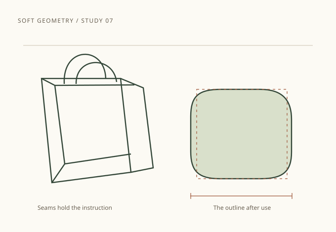

Art & design
Soft Geometry

192 pages170 × 250 mmEnglish
Paperback: flexible cover
Hardback: cloth-covered boards
Drawings of paper bags, chair backs and folded objects, paired with essays on how use changes a shape.
Read an original sampleYour sample bag
Change a format or quantity, then choose Update. Your selection stays in this browser.
Try the two-book exerciseYour bag is empty
Choose a title, format and quantity above to start a sample selection.
0 copies
Total · USD$0.00
Your selection is kept automatically after each change.
Current text export
A text file has been downloaded. You can also select and copy this text.
Inside Soft Geometry
Choose another titleMira Kline traces curves, corners and quiet patterns through everyday objects. A collection of drawings and close observations, from the fold of a paper bag to the shape of a chair.
Drawing and essay sample · 42–43
A corner remembers a fold

A paper bag begins with straight edges, yet it rarely remains straight. Its base opens into a rectangle. The sides bow around whatever it carries. After a few journeys, the corners become small curves: the record of a rigid plan meeting an uneven world.
Draw the bag twice. First, follow the seams as if the paper were newly folded. Then follow only the outline you can see while the bag is standing. The two drawings describe the same object at different moments. One holds the instruction; the other holds its use.
The softened rectangle on this page is taken from that second drawing. Its curve is modest. It keeps enough of the corner to suggest how the bag was made, while leaving enough movement to show what has happened to it.
Original drawing study: the folded bag and its base. A geometric observation, rather than a photograph.
Original sample material from an imagined book.
Choose format and quantity